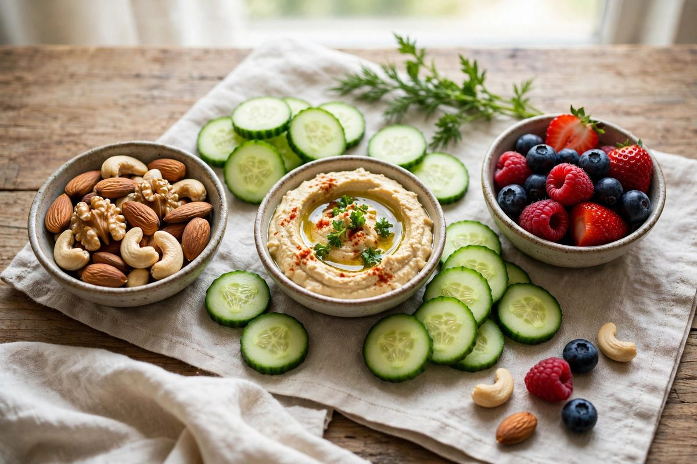

Diabetic Snacks — Smart Snacking Between Meals
Snacks that help blood sugar stay steady: protein and fibre choices, portions, and what to avoid.
Do you need snacks?
Not everyone with diabetes needs snacks. If your meals keep you full and your blood sugar is steady, three balanced meals may be enough. Snacks are useful if there is a long gap between meals, if you are active, or if your care team has advised them, for example to prevent low blood sugar. The key is to make snacks planned and portioned, rather than unplanned grazing. A snack should be small, about 100 to 200 calories, with protein or fibre, and it should fit your overall carbohydrate plan for the day.
Best snack choices
Good diabetic snacks combine protein or fibre with a moderate carbohydrate portion. Examples include a small apple with a tablespoon of peanut butter, plain Greek yoghurt with berries, a boiled egg, carrot sticks with hummus, a small handful of nuts, cottage cheese with cucumber, or a small portion of cheese with wholemeal crackers. These snacks are filling, slow to digest, and keep blood sugar steadier than biscuits or crisps. Keep a short list of snacks you enjoy and rotate them, so snacking stays varied and satisfying.
Snacks to limit
Biscuits, cakes, crisps, chocolate, and sugary drinks are the snacks that cause the biggest blood sugar rises, and they are easy to overeat because they are low in fibre and gone in minutes. That does not mean never eating them, but they work better as an occasional small treat than as a daily habit. If you keep them in the house, keep them in small portions and out of sight, so eating them is a decision rather than a reflex. Dried fruit is also easy to overeat: a small box of raisins contains as much sugar as a chocolate bar, so treat it as a sweet, not a health food.
Portions and planning
Pre-portion snacks into small containers instead of eating from a large packet. A small handful of nuts is about 30 grams; a bag can contain three or four portions. Keep healthy snacks visible and ready: cut vegetables, washed fruit, and yoghurt at the front of the fridge. Plan one or two snacks a day into your carbohydrate plan, so they are part of the day rather than an extra. If you snack at the same time each day, such as mid-afternoon, make that a proper planned snack with protein, not a raid on the biscuit tin.
Snacks for low blood sugar
If you take insulin or certain diabetes tablets, your care team may have advised you on treating low blood sugar, known as a hypo. The usual advice is to take fast-acting carbohydrate, such as glucose tablets or a small glass of juice, then a longer-acting snack once your blood sugar recovers. Follow your care team's specific advice, and always carry your hypo treatment with you. Do not use chocolate or biscuits to treat a hypo, because their fat slows the sugar absorption. This guide is general information; your own hypo plan comes from your care team.
Snacking at work and on the go
Keep portable snacks with you: fruit, nuts in single portions, yoghurt, or a small pack of crackers. Avoid the office biscuit tin by bringing your own afternoon snack. When travelling, pack food rather than relying on service stations. If you snack because you are bored or stressed rather than hungry, try a short walk or a glass of water first. A five-minute delay often shows that the urge was not hunger. Snacking well is a skill, and like any skill, it improves with practice.
Frequently Asked Questions
What are the best snacks for diabetes?
Snacks with protein or fibre and a moderate carbohydrate portion: yoghurt with berries, an apple with peanut butter, a boiled egg, vegetables with hummus, or a small handful of nuts.
How many snacks a day should I have?
One or two planned snacks of 100 to 200 calories each suit most people. If your meals keep you full, you may not need snacks at all. Ask your care team what fits your plan.
Can I eat chocolate with diabetes?
Yes, occasionally, in a small portion. Dark chocolate in a small amount is a better choice than a large milk chocolate bar. Treat it as an occasional sweet, not a daily snack.